Denoise
Compare a Gaussian blur, a one-step estimate and iterative flow denoising, and see why one step is not enough.
CS 180 · PROJECT 3 · FALL 2026
A pretrained text-to-image flow model, probed with noise, blur and Euler steps, then used to edit images and make optical illusions (Part A), and flow-matching UNets trained from scratch to turn Gaussian noise into MNIST digits (Part B).
PROJECT MAP
Compare a Gaussian blur, a one-step estimate and iterative flow denoising, and see why one step is not enough.
Integrate a velocity field from Gaussian noise to data, first with a pretrained model, then with UNets trained from scratch.
Condition on time and on class labels, and strengthen the signal with classifier-free guidance.
SETUP
Part A uses the pretrained text-to-image model PixNerd-XXL-P16-T2I, which generates 512 × 512 images, and implements the sampling procedures around it. Time runs from noise to data: xt = (1 − t)ε + t·x1 with ε ∼ N(0, I), so t = 0 is pure noise and t = 1 is a clean image. The network predicts the velocity vθ(xt, t, c) ≈ x1 − ε for an image xt, a time t and a text condition c. Until Section 3 the condition is the generic prompt “a high quality photo”. Sections 1.1–1.5 use one photograph of my own (not the course's Campanile), center-cropped to 512 × 512 with RGB values in [−1, 1]. Every result below comes from the submitted notebook.
PART A · 1.1
The forward process interpolates between the clean image and Gaussian noise, xt = (1 − t)ε + t·x1. It is not just “adding noise”: the image is scaled by t as well, so a small t leaves little signal. I sample one noise tensor ε and reuse it at t = 0.25, 0.50 and 0.75, so the three inputs differ only in how much signal they keep. The notebook checks both endpoints: t = 0 returns ε exactly and t = 1 returns the image exactly.
def interpolate(image, noise, t):
return (1 - t) * noise + t * image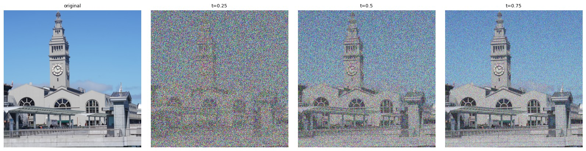
PART A · 1.2
As a baseline without a learned model, I first undo the amplitude scaling, xt/t = x1 + ((1 − t)/t)·ε, and then apply a Gaussian filter Gσ. Dividing by t restores the brightness of the image but not its cleanliness: it amplifies the noise by (1 − t)/t. For every noise level I swept σ ∈ {1, 2, 4, 8, 16} and kept the σ with the lowest mean squared error to the clean image: σ = 8 at t = 0.25, σ = 4 at t = 0.50 and σ = 1 at t = 0.75.
This is the trade-off of blurring: independent noise averages out, but so does every real detail. At t = 0.25 only a colourful smear of the tower and the arches survives, and even at t = 0.75 the blurred result is visibly softer than the input.
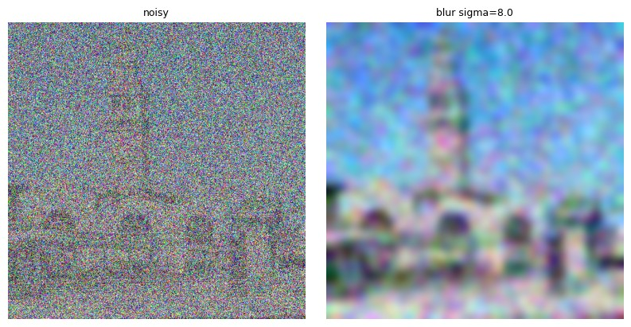
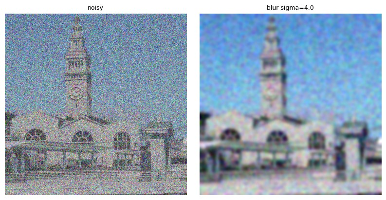
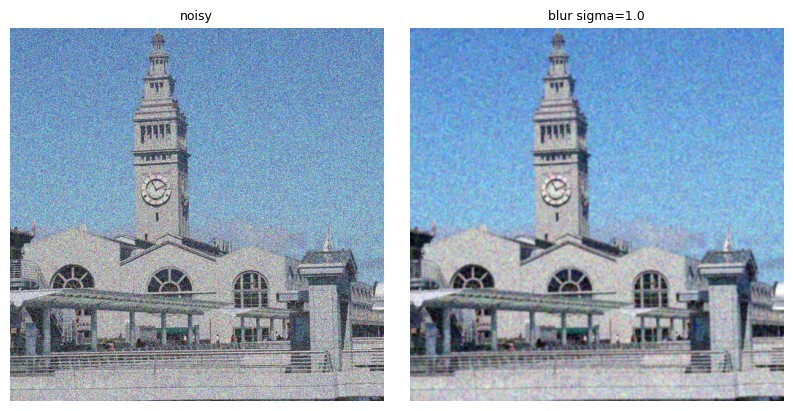
PART A · 1.3
The flow model gives a velocity, not a noise estimate, so one prediction is extrapolated to the clean endpoint: x̂1 = xt + (1 − t)·vθ(xt, t, c). At t = 0.75 the estimate is almost indistinguishable from the original, and at t = 0.50 it is already close, with only slightly smoothed texture. At t = 0.25 it is clean but over-smoothed: the tower, windows and railings lose their texture and the clock face almost disappears.
A single step follows one straight line from xt to the clean image, but the learned trajectories are curved. When most of the image is noise, the best a one-shot prediction can do is return something close to the average of all images consistent with the noisy input, and averages are smooth. Part B shows this effect in its purest form.
@torch.inference_mode()
def one_step_denoise(x, t, condition, predict_velocity):
return x + (1 - t) * predict_velocity(x, t, condition)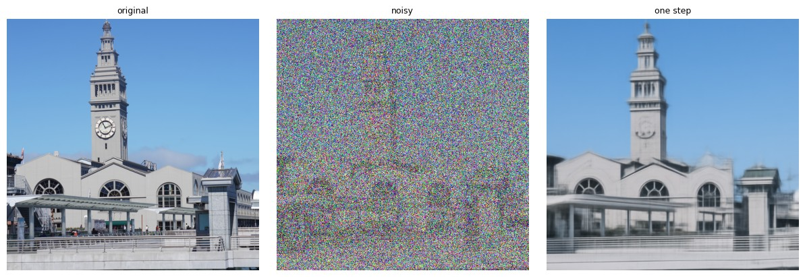
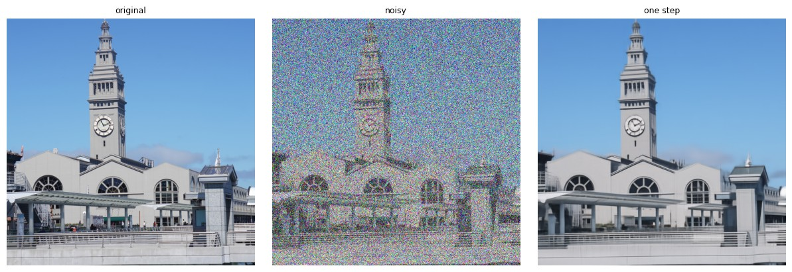
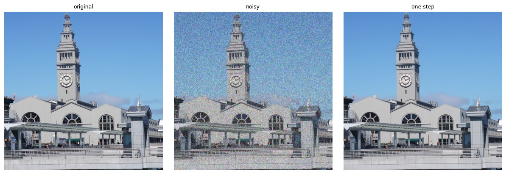
PART A · 1.4
What the model adds to the noisy image is the update (1 − t)·v̂t. Because the clean image is known, the update that would recover it exactly is (1 − t)·vgt = x1 − xt. The error map is the per-pixel RMS difference over RGB, Et = √ meanRGB[((1 − t)(v̂t − vgt))²], computed before any clipping, and all three times share the same color scales (zero is mid-gray for the updates).
The predicted update already reproduces the large-scale structure of the true one. The error concentrates on edges and fine detail (the tower outline, the clock face, windows, railings), where signal and noise are hardest to separate, and it shrinks from t = 0.25 to t = 0.75 (the maps get darker). This is why a one-step estimate is acceptable late in the path and poor early on.
@torch.inference_mode()
def velocity_diagnostics(x_t, t, clean_image, epsilon, condition, predict_velocity):
"""Return predicted_update, ground_truth_update, and error_map.
Both updates have shape (B, 3, H, W).
The error map has shape (B, H, W): average only over RGB, keeping each pixel.
Return raw values before display scaling or clipping.
"""
# STUDENT IMPLEMENTATION: use the equations in Section 1.4.
predicted_update = (1 - t) * predict_velocity(x_t, t, condition)
ground_truth_update = (1 - t) * (clean_image - epsilon)
error_map = ((predicted_update - ground_truth_update) ** 2).mean(dim=1).sqrt()
return predicted_update, ground_truth_update, error_map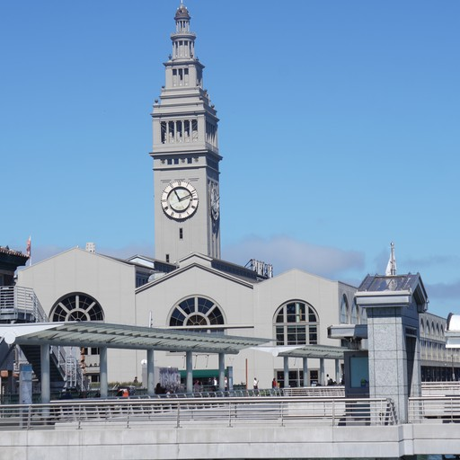
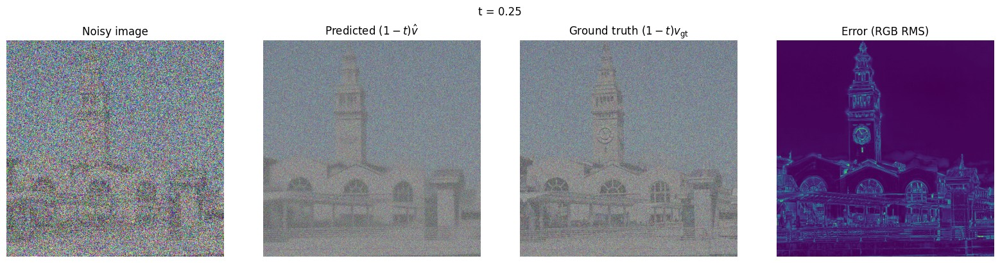
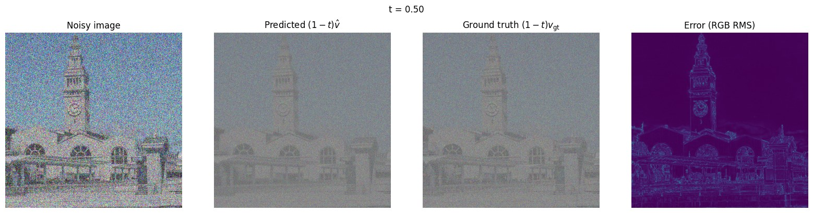
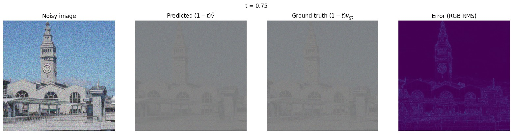
PART A · 1.5
Instead of one big step, take small ones and recompute the velocity after every update: xt+h = xt + h·vθ(xt, t, c), with h = 0.02. Starting from the t = 0.50 noisy image this takes 25 updates, and the last step is shortened when necessary so that t ends at exactly 1 (the notebook's check with a constant velocity field expects 50, 25 and 4 evaluations for starting times 0, 0.5 and 0.93, and passes). The trajectory shows the initial state, every fifth update and the final image: the overall structure is already visible at t = 0.5, the fine detail (clock face, arches) sharpens by t ≈ 0.8, and the residual speckle in the sky disappears last.
On the same noisy input the Gaussian blur is soft and still noisy, while the two learned estimates are both clean and close to the original. In mean squared error to the original, the one-step estimate (0.0081) is slightly better than Euler (0.0093), and both are far better than the blur (0.0366). That ranking does not mean the one-step image is the better picture: MSE rewards the average of all plausible clean images, which is exactly what a single regression step predicts, whereas Euler commits to one plausible image whose small details can differ from the original. It is the same effect that Part B isolates.
@torch.inference_mode()
def euler_sample(x_start, t_start, step_size, velocity):
n = math.ceil((1.0 - t_start) / step_size - 1e-9)
x, t = x_start, float(t_start)
states = [(t, x)]
for i in range(n):
t_next = 1.0 if i == n - 1 else t_start + (i + 1) * step_size
x = x + (t_next - t) * velocity(x, t)
t = t_next
if (i + 1) % 5 == 0 or i == n - 1:
states.append((t, x))
return x, states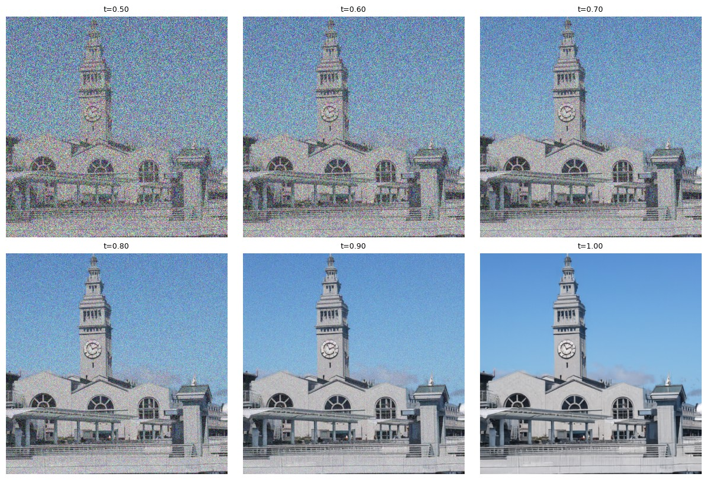
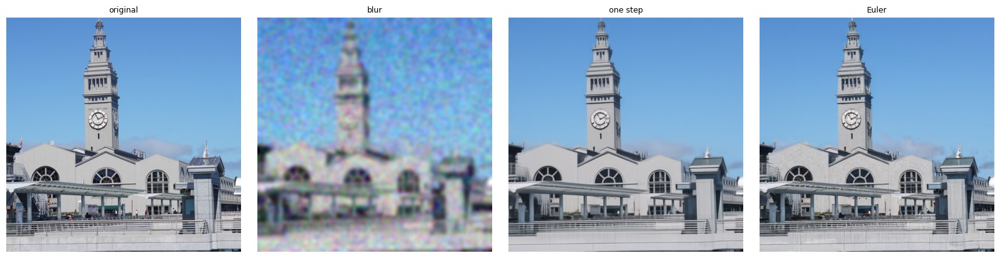
| method (t = 0.5 input) | MSE to the original |
|---|---|
| Gaussian blur (σ = 4) | 0.0366 |
| one-step estimate | 0.0081 |
| Euler, 25 updates | 0.0093 |
PART A · 1.6
Setting tstart = 0 and passing pure Gaussian noise to the same Euler sampler turns the denoiser into a generator. Five samples with seeds 180–184 and the prompt “a high quality photo” are below. The generic prompt strongly favors one kind of subject: all five are portraits of people, and several are flawed — the face of seed 180 is smeared away and the face of seed 183 is distorted. Without guidance the model's idea of “a photo” is dominated by portraits of mediocre fidelity; classifier-free guidance (Section 2) is meant to improve both prompt alignment and quality.
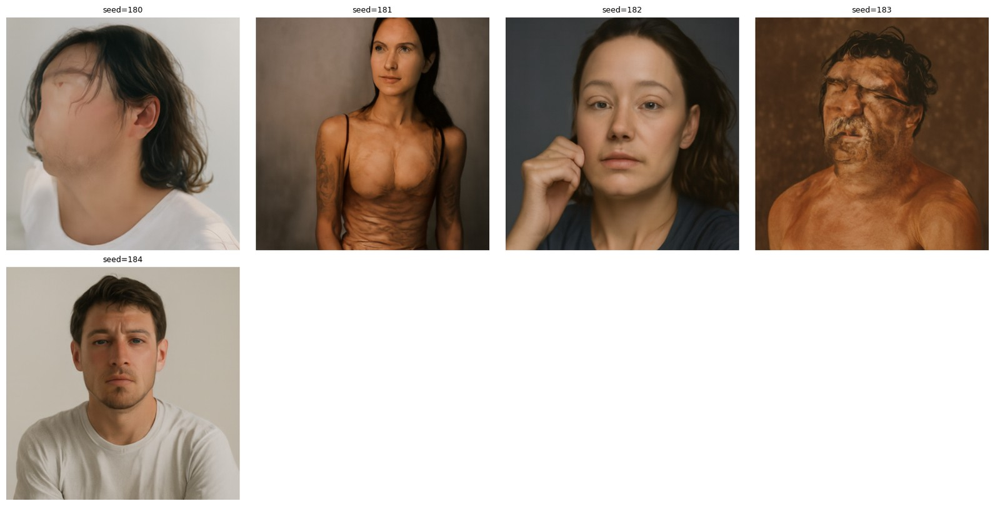
PART A · 2.1
A conditional prediction can be strengthened by contrasting it with an unconditional one. With vc the velocity for the prompt and vu the velocity for the empty prompt “”, evaluated at the same xt and t, vcfg = vc + w·(vc − vu). I implemented cfg_velocity with two separate network evaluations, so that w = 0 reproduces the conditional prediction exactly (the notebook checks this with torch.equal). With w = 7 and h = 0.02 I regenerated the five noises of Section 1.6 with the same prompt.
The effect is large. Every sample is now a clean, well-lit, anatomically coherent portrait: the smeared face of seed 180, the strange skin texture of seed 181 and the distorted face of seed 183 are gone, and all five are frontal portraits with a direct gaze. Guidance improves prompt alignment and image quality, but the generic prompt still produces only portraits, and the five samples are more alike in style than the unguided ones (which included a turned head and a torso shot), consistent with the usual trade of diversity for fidelity. The price is a second network evaluation at every step, which doubles the cost of sampling.
@torch.inference_mode()
def cfg_velocity(x, t, condition, w, predict_velocity, null_condition=''):
v_c = predict_velocity(x, t, condition)
v_u = predict_velocity(x, t, null_condition)
return v_c + w * (v_c - v_u)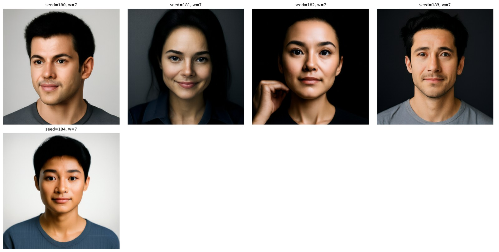
PART A · 3.1
Real images can be edited with the same sampler (the idea of SDEdit). edit noises an image to a starting time tstart, x = (1 − tstart)ε + tstart·x1, and then integrates the guided velocity from tstart to 1 (w = 7, h = 0.02, prompt “a high quality photo”). Noise pushes the image off the manifold of natural images and sampling pulls it back, so the smaller the starting time the more freedom the model has. The same ε (seed 180) is used at every starting time, so each row is one controlled sweep.
@torch.inference_mode()
def edit(image, noise, t_start, condition, predict_velocity, w=7, step_size=0.02):
x_t = interpolate(image, noise, t_start)
edited, _ = euler_sample(
x_t, t_start, step_size,
lambda x, t: cfg_velocity(x, t, condition, w, predict_velocity, null_condition))
return editedPART A · 3.1 · THE CAMPANILE AND TWO OF MY OWN IMAGES
Campanile. At t = 0.02 only a pale rounded vertical shape against blue survives. At t = 0.04–0.06 the sampler draws a smooth, featureless white tapering tower (with a small bracket near the top at t = 0.06). At t = 0.10–0.14 the tower gets a single dark window and the correct framing, with trees at the bottom, but no belfry. The three belfry arches come back at t = 0.25, and the clock hands and the small windows along the shaft only at t = 0.50, where the result is nearly the original.
my_image_1 (a clock tower on a white building). The lowest starting times generate unrelated content: at t = 0.02 only blue sky and clouds remain (the top half of the photo is sky), at t = 0.04 a white colonnade-like structure, at t = 0.06 a modern flat-roofed building. At t = 0.10 a slender pole-like tower rises from a modern building; at t = 0.14 it is a square tower with windows on a white building, much closer to the photo; by t = 0.25 the tower, its upper stages and the three arched windows are back, and the clock face only returns at t = 0.50.
my_image_2 (a street at dusk). With so little signal the generic prompt pulls the sampler toward portraits, as in Section 1.6: at t = 0.02–0.10 it draws a man in front of a blurred sunset. The dark silhouette of the tree is read as a torso and the orange horizon survives as the background (the face at t = 0.10 has visible artifacts). At t = 0.14 the scenery comes back as a tree and an off-road vehicle in a field against the dusk sky (the houses are not there yet), and from t = 0.25 the tree, houses and road are restored.
In all three, the color layout of the input survives first (blue sky, the orange horizon), the main structure returns from t ≈ 0.10–0.25, and fine detail (clock faces, belfry arches) only at t ≥ 0.25–0.50.
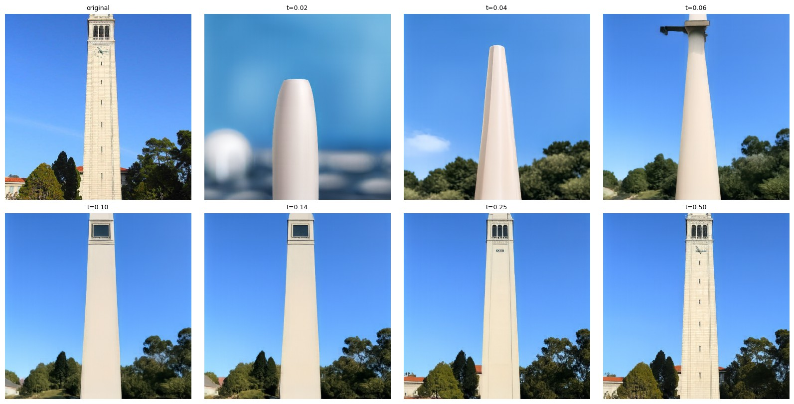
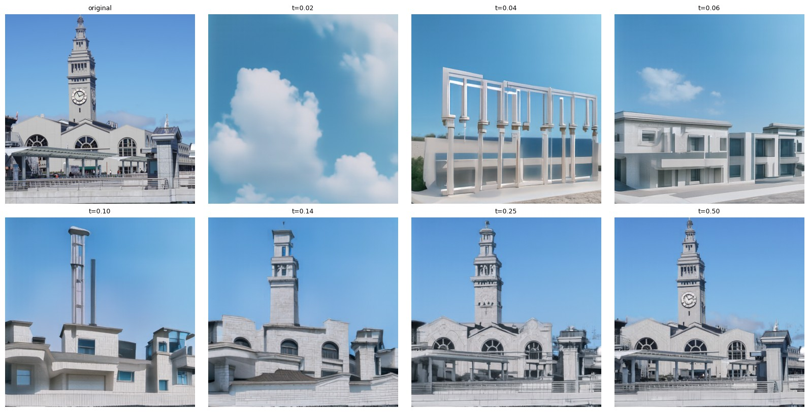
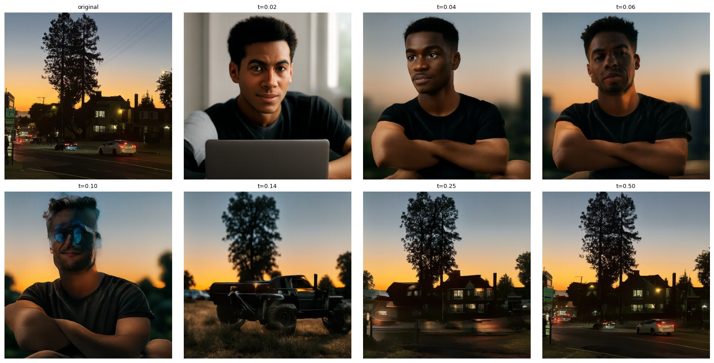
PART A · 3.1 · A WEB IMAGE AND TWO HAND DRAWINGS
The same sweep as for the photographs, with three extra starting times: 0.17, 0.20 and 0.22. In the required grid the step from t = 0.14 to t = 0.25 is where the web image and the flower go from not restored to restored: the cottage and the blue flowers are missing at t = 0.14 and back at t = 0.25. I added three starting times to follow that change in smaller steps. The flower heads, for example, go from smooth blue discs (t = 0.17) through paper-like petals (t = 0.20) to petals with stamens (t = 0.22), and the cottage of the web image appears at t = 0.22. The house is a different case: it is already recognizable at t = 0.10, so for it the extra values only show how its blurry version slowly changes. Flat, non-realistic inputs give the sampler very little to hold on to, so it reads their shapes and colors as the closest natural objects.
Web image (a watercolor landscape). At t = 0.02–0.10 the output is a portrait and a hand holding a blue object, and the vertical blue wash at the top of the painting becomes first a blue box (t = 0.04–0.06) and then a blue stripe on a gray box (t = 0.10). From t = 0.14 it is back as a blue wash above a sunlit green hill, and the cottage itself only reappears at t ≈ 0.22.
Flower drawing. At t = 0.02–0.04 the output is a portrait. At t = 0.06–0.10 the dark-green stems turn black on a white relief-like disk. At t = 0.14 the green stems are back with a pale circular halo and a patch of sky where the blue flowers were. At t = 0.17–0.20 the flat blue shapes become soft blobs and petals, and at t = 0.22–0.25 they turn into natural-looking petals with orange stamens: the drawing has been projected onto something more realistic.
House drawing. After a portrait at t = 0.02, the red roof becomes a red rose held in a hand against a blue sky at t = 0.04, and a red hat at t = 0.06, where the black window turns into a black camera-like object. At t = 0.10 the house is back as a clean, clip-art-like version with a chimney; from t = 0.14 it is a soft version of the drawing with yellow flowers, and at t = 0.50 it is close to the original.
What worked and what did not. The best results are the web image and the flower at t ≈ 0.22–0.25: the model keeps the composition and turns painted or drawn shapes into more natural-looking ones. The web image looks more like a photograph than the original painting, with a cottage, trees and light that are rendered realistically, and the flat blue shapes of the flower become petals with stamens. The most entertaining result is the house, whose red roof is misread as a rose (t = 0.04) and a hat (t = 0.06). The weaker results fall into three groups. (1) At t ≤ 0.10 the outputs are mostly unrelated portraits or objects (for the flower, black stems on a white disk), because with so little signal the generic prompt takes over; some have visible artifacts, such as the man with a gray box over his head at t = 0.10 in the web-image sweep. (2) For the house, t = 0.14–0.25 is a blurry version in which the flat black door and window melt into blobs; a likely reason is that flat, textureless shapes give the model nothing to anchor on, so it smooths them. (3) For the web image, t = 0.14–0.20 keeps the colors and the composition but not yet the cottage. In short, only the middle of each sweep is a convincing edit; the low end is closer to generating a new image than to editing the old one.
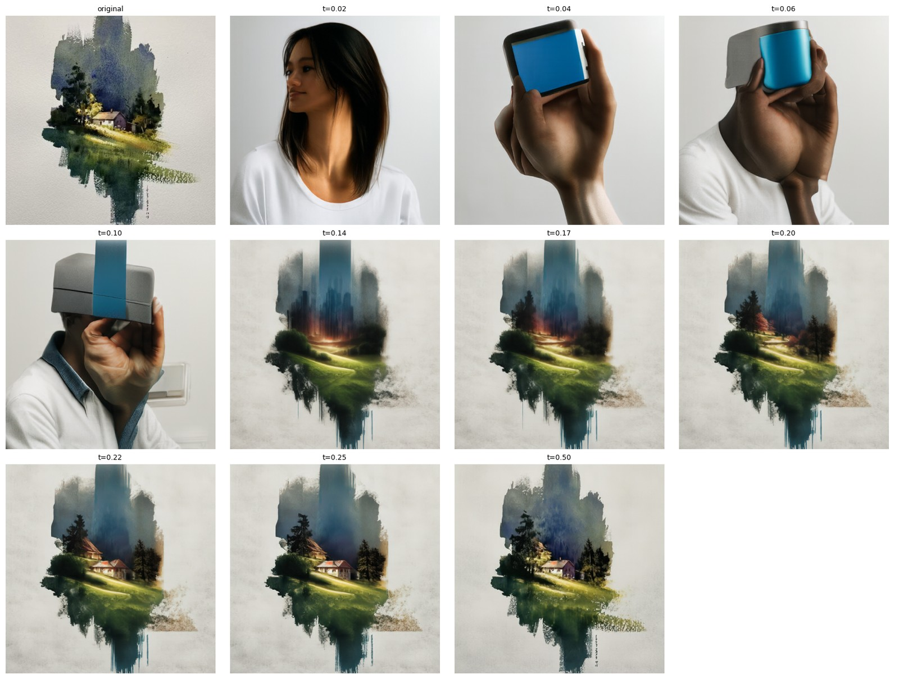
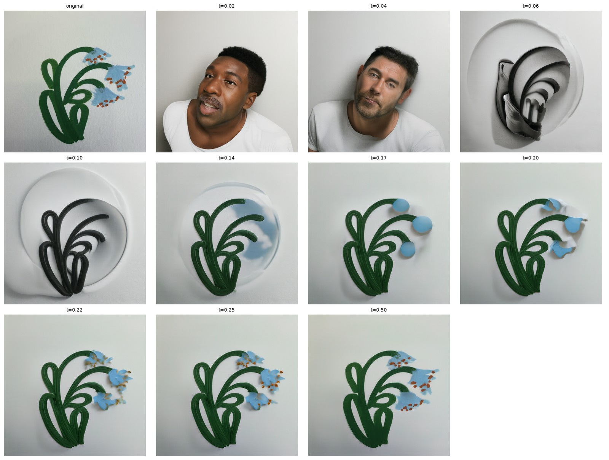
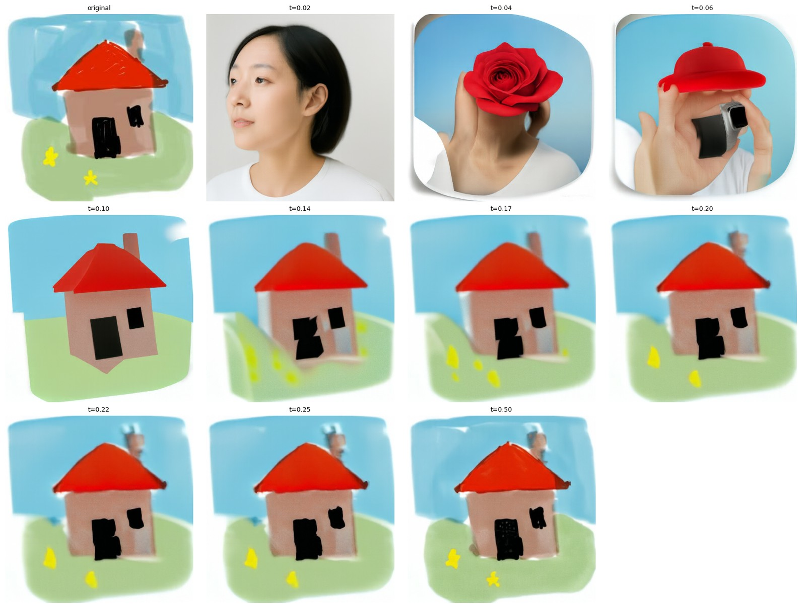
PART A · 3.2
The same procedure with the generic prompt replaced by a description of the desired edit (the prompt is the title of every figure). Small starting times give the prompt more room, large ones preserve the image, and the useful range depends on the kind of edit.
Campanile → “a photograph of a rocket on a launch pad”. The prompt wins at t = 0.02–0.06: rockets standing on a steel launch platform with a gantry tower and clouds, and the Campanile is gone. At t = 0.10–0.14 the result keeps the Campanile's framing and proportions (a tall vertical subject in the center against blue sky, a hill and trees at the bottom) while the tower becomes a white rocket with a green window and a launch structure beside it. At t = 0.25 the sky and trees are back and the shaft is a pale tower with a belfry window, a mixture of rocket and Campanile, and at t = 0.50 the result is nearly the original.
my_image_1 → “a watercolor painting of a clock tower”. At t = 0.02–0.06 the model paints a different, more ornate clock tower (a spire in the style of Big Ben at t = 0.02) with irregular wet-edge borders typical of watercolor, and the building does not resemble the photo. From t = 0.10 it keeps the composition of the photo (a clock tower on a wide building with a low terrace in front) and turns it into a convincing watercolor, with blue washes and ink outlines; t = 0.10–0.25 is the sweet spot, because at t = 0.14–0.25 the arched windows and the shape of the building follow the photo, and at t = 0.50 the result is close to the photo with a faint painterly feel.
my_image_2 → “an oil painting of a street at sunset, thick impasto brushstrokes”. At t = 0.02 the result is a Van Gogh-like street under a swirling orange sky, with two suns and utility poles, i.e. a new composition; at t = 0.04 the model invents a tall tower that is not in the photo. From t = 0.06 to 0.14 the tall tree, the houses and the sunset are kept and painted with heavy brushstrokes (the lit windows and the road reflections are particularly convincing), and the painterly texture fades towards t = 0.50, where the cars return. In short, object edits work best at t ≈ 0.06–0.14 and style edits at t ≈ 0.10–0.25.
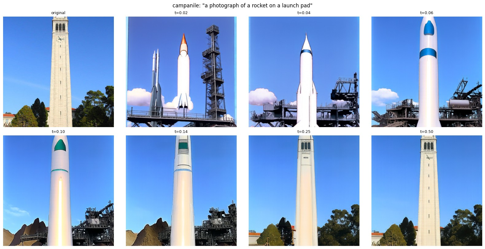
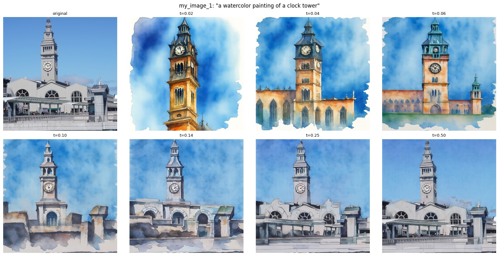
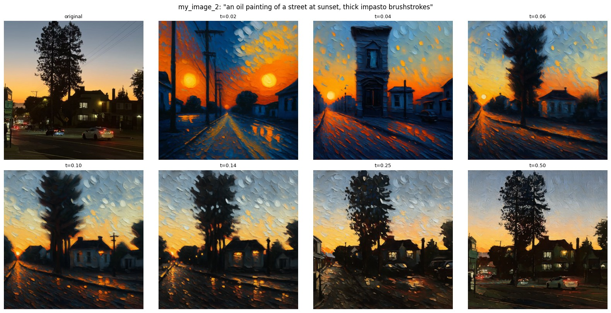
PART A · 3.3
A visual anagram is one image that shows different subjects when it is rotated by 180°. At every Euler step I predict a guided velocity for the image with prompt p1, rotate the image by 180° (both spatial axes), predict a guided velocity with prompt p2, rotate that velocity back, and average: v = ½[vcfg(xt, t, p1) + flip(vcfg(flip(xt), t, p2))], with w = 7 and h = 0.02, starting from pure noise. The two views share the same pixels, so the sampler has to find an image that is plausible for both prompts at once.
I tried six prompt pairs and kept the two whose upright and rotated views are both recognizable.
Clown ↔ circus tent (seed 181). The best result. The shapes correspond naturally: the clown's ruffled collar and conical body become the tent's scalloped eaves and conical roof, the clown's face (small, at the top) becomes the doorway (small, at the bottom), and the red arc above the clown's head becomes the ground. The colors and the oil-painting texture are consistent in both views. Honest flaws: the doorway of the tent contains an upside-down clown face, and the red arc looks like a big red lip over the clown's head.
Ship on a stormy sea ↔ dog (seeds 180 and 181). Both seeds give a recognizable ship and a recognizable dog, but they trade off differently, so I show both at the required h = 0.02. Seed 181 (the one I chose) is colorful: golden sails, a dark hull and white spray in the upright view, and a frontal dog's face with dark ears and a white blaze when rotated. Its weakness is that the dog's eyes and nose show through the hull in the ship view, and traces of the sails frame the dog's muzzle, presumably because the ship's symmetrical bow lines up with the dog's face. Seed 180 has the cleaner ship (hull, mast, white spray at the bow and a pale stormy sky) and a dog's head in profile with a white tuft at the muzzle, but the whole image is very dark, so the dog needs a closer look; in the rotated view the ship's hull becomes the dog's neck.
The result depends strongly on the seed, and a seed does not give the same image at a different step size. Screening the ship/dog pair with six seeds at h = 0.05 gives very different images: seeds 180 and 184 are dark and abstract, 182 has a large face in the ship, 183 has the clearest ship but the dog is covered by mast lines, and 185 has the most vivid dog. (The h = 0.05 image for seed 180 is less clear than its h = 0.02 version above, so the screening is only a rough guide.) I chose seed 181 because both of its views are readable, and I re-ran it at the required h = 0.02.
@torch.inference_mode()
def visual_anagrams(noise, condition_a, condition_b, predict_velocity, w=7, step_size=0.02):
def velocity(x, t):
v1 = cfg_velocity(x, t, condition_a, w, predict_velocity, null_condition)
v2 = rotate180(cfg_velocity(rotate180(x), t, condition_b, w, predict_velocity, null_condition))
return (v1 + v2) / 2
out, _ = euler_sample(noise, 0.0, step_size, velocity)
return out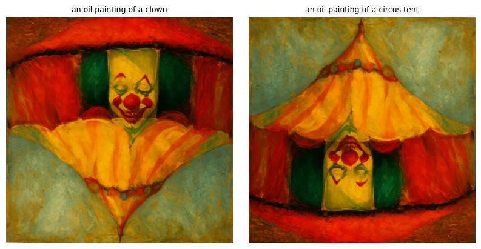
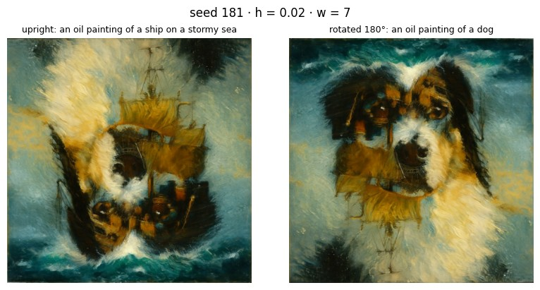
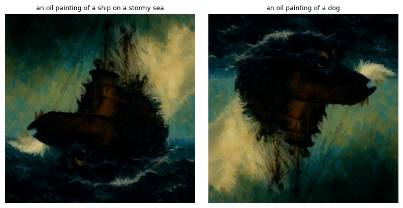
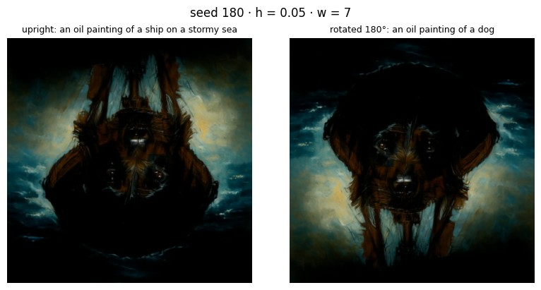
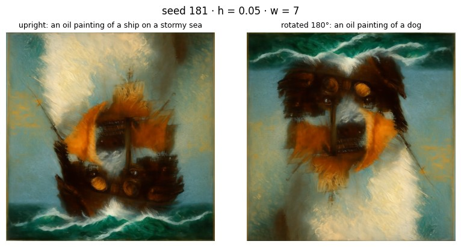
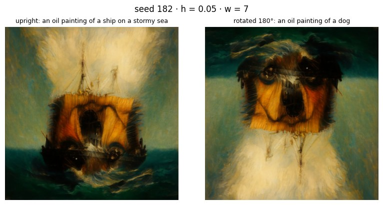
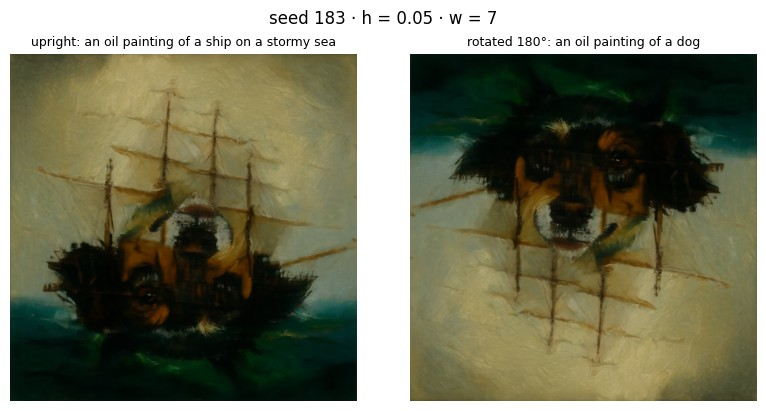
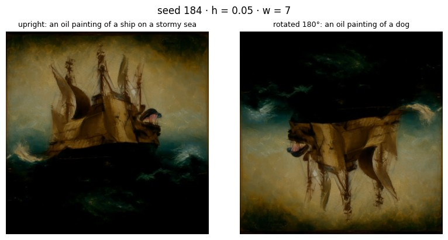
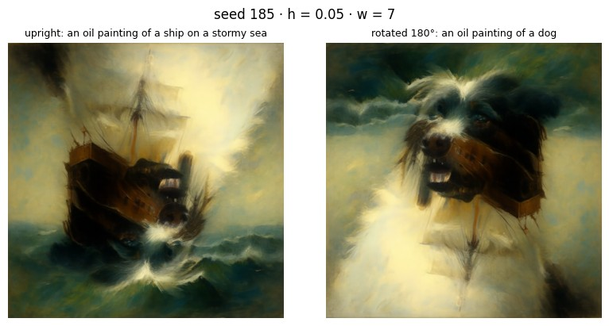
PART A · 3.4
As in Project 2, a hybrid image combines the low frequencies of one picture with the high frequencies of another, so the subject depends on viewing distance. Here the combination happens in the velocity: at every step I compute a guided velocity for the distant prompt, v1 = vcfg(xt, t, p1), and one for the close-up prompt, v2 = vcfg(xt, t, p2), and use v = lowpass(v1) + (v2 − lowpass(v2)), where lowpass is a Gaussian blur. w = 7, h = 0.02.
The assignment recommends σ = 16, whose −3 dB cutoff passes only about 4.2 cycles per image to the distant prompt. I made σ a parameter of make_hybrids (the default is still 16) and used σ = 12 (5.7 cycles per image) for the first image and σ = 10 (6.8 cycles per image) for the second, which hands the distant prompt a slightly wider band of coarse structure. I also described the distant subject as a face filling the frame, so that its coarse layout (eye patches, ears, muzzle) is what the low frequencies carry. The seed is 182 for both images. The “from far away” view is the 512 × 512 result shrunk to 64 × 64 with Lanczos resampling, as in the notebook's display cell, and enlarged again for reading.
Raccoon (far) ↔ pine forest (close), σ = 12. This one works. Up close it is a dense lithograph of pine trees; shrunk to 64 × 64 the dark pines become the raccoon's ears and the dark patches around its eyes, and the bright gaps become the pale forehead and muzzle.
Lion (far) ↔ wildflowers (close), σ = 10. Only a partial success. Up close it is a golden wildflower lithograph. At 64 × 64 the two large dark flowers at the top read as eyes and the warm yellow as a mane, but the outline of a lion's face is not clearly formed and the image is still mostly a bouquet. A likely reason is that a hybrid works best when the two subjects share a tonal layout: the raccoon's dark mask lines up with the dark pines, whereas a lion's face has little strong dark/light structure that mid-tone flowers can carry.
@torch.inference_mode()
def make_hybrids(noise, condition_a, condition_b, predict_velocity, w=7, step_size=0.02, sigma=16.0):
def velocity(x, t):
v_a = cfg_velocity(x, t, condition_a, w, predict_velocity, null_condition)
v_b = cfg_velocity(x, t, condition_b, w, predict_velocity, null_condition)
return lowpass(v_a, sigma) + (v_b - lowpass(v_b, sigma))
out, _ = euler_sample(noise, 0.0, step_size, velocity)
return outSETUP
Part B trains everything from scratch on MNIST (60,000 training and 10,000 test digits, pixels in [0, 1]). All Part B results come from one run of the Part B notebook (seed 180, top to bottom). Noise is drawn fresh for every batch, so no epoch sees the same noisy image twice.
PART B · 1.1
The denoiser is built from the nine operations of the assignment: Conv (3×3 conv + BatchNorm + GELU), DownConv (stride-2 conv), UpConv (stride-2 transposed conv), Flatten (7×7 average pool + GELU), Unflatten (7×7 transposed conv) and the composed ConvBlock, DownBlock and UpBlock. With D hidden channels the encoder maps 1×28×28 → D×28×28 → D×14×14 → 2D×7×7, Flatten pools the map to one 2D vector, Unflatten expands it back to 2D×7×7, and the decoder mirrors the encoder with skip connections (channel concatenation) at 7×7, 14×14 and 28×28 before a final 3×3 convolution to one channel. With D = 128 the network has 7,891,073 parameters.
class UnconditionalUNet(nn.Module):
def __init__(self, in_channels: int, num_hiddens: int):
super().__init__()
D = num_hiddens
self.conv0 = ConvBlock(in_channels, D) # D x 28 x 28
self.down1 = DownBlock(D, D) # D x 14 x 14
self.down2 = DownBlock(D, 2 * D) # 2D x 7 x 7
self.flatten = Flatten() # 2D x 1 x 1
self.unflatten = Unflatten(2 * D) # 2D x 7 x 7
self.up1 = UpBlock(4 * D, D) # D x 14 x 14 (input: concat with down2 output)
self.up2 = UpBlock(2 * D, D) # D x 28 x 28 (input: concat with down1 output)
self.conv1 = ConvBlock(2 * D, D) # D x 28 x 28 (input: concat with conv0 output)
self.out = nn.Conv2d(D, in_channels, kernel_size=3, stride=1, padding=1)
def _run(self, x, modulate_unflatten=None, modulate_up1=None):
x0 = self.conv0(x)
x1 = self.down1(x0)
x2 = self.down2(x1)
z = self.unflatten(self.flatten(x2))
if modulate_unflatten is not None:
z = modulate_unflatten(z)
y1 = self.up1(torch.cat([z, x2], dim=1))
if modulate_up1 is not None:
y1 = modulate_up1(y1)
y2 = self.up2(torch.cat([y1, x1], dim=1))
y3 = self.conv1(torch.cat([y2, x0], dim=1))
return self.out(y3)
def forward(self, x: torch.Tensor) -> torch.Tensor:
assert x.shape[-2:] == (28, 28), "Expect input shape to be (28, 28)."
return self._run(x)PART B · 1.2
The denoiser is trained on pairs (z, x), where x is a clean digit and z = x + σε with ε ∼ N(0, I). Below, the same ε is applied at every σ ∈ {0, 0.2, 0.4, 0.5, 0.6, 0.8, 1.0}; images are clipped to [0, 1] for display only. Digits are still readable at σ = 0.5 but only just, and at σ = 1.0 the noise is as strong as the signal.
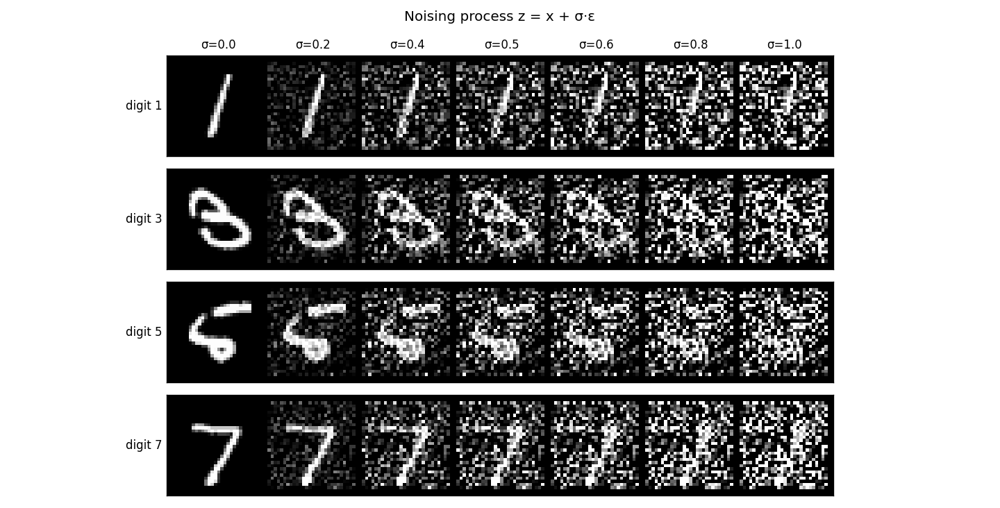
PART B · 1.2.1
The UNet (D = 128) is trained with an L2 loss to map z = x + 0.5·ε back to x: Adam with learning rate 10−4, batch size 256, 5 epochs over the shuffled training set. The mean training loss falls from 0.0205 in epoch 1 to 0.0083 in epoch 5.
After one epoch the denoiser already recovers all ten held-out digits, but strokes are slightly ragged and a faint speckle remains in the background. After five epochs the background is clean and the strokes are sharper and closer to the clean inputs. One structural error survives in both epochs: the “3” in the test row, whose upper curl almost closes, is completed as an “8” — from a single noisy view the network can only pick the most plausible digit shape.
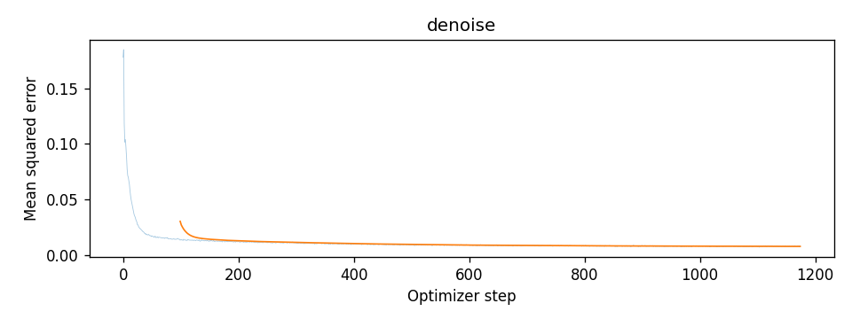
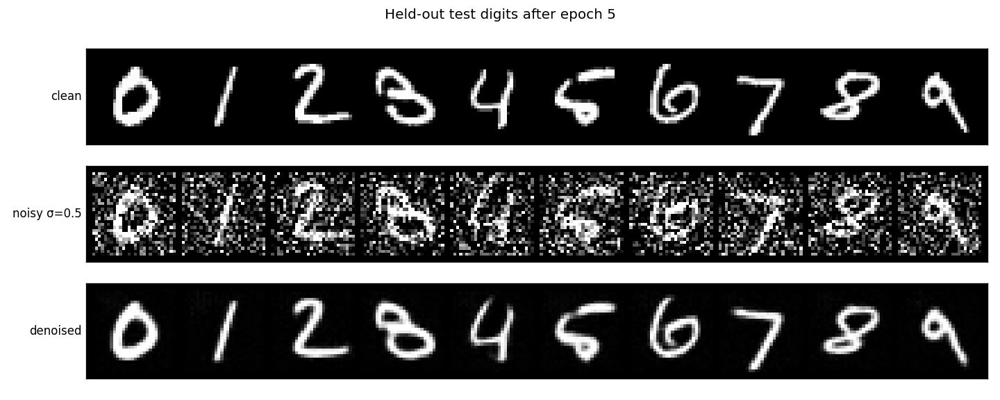
PART B · 1.2.2
The same denoiser, trained only at σ = 0.5, handles every smaller noise level and moderately larger ones: for σ ≤ 0.6 the output stays a clean, correct digit. Beyond the training level it degrades gradually: at σ = 0.8 and 1.0 the strokes break up and the network adds hallucinated fragments (the 7 turns into something 3-like), yet its MSE is still roughly 25× below that of the input. The σ = 0 column shows the other side: given a clean image the output is slightly smoothed (MSE 0.0038, not 0), because the network always assumes that noise of about σ = 0.5 is present. A denoiser trained at one noise level works well only near that level, which is one reason flow matching trains on all noise levels and conditions the network on t.
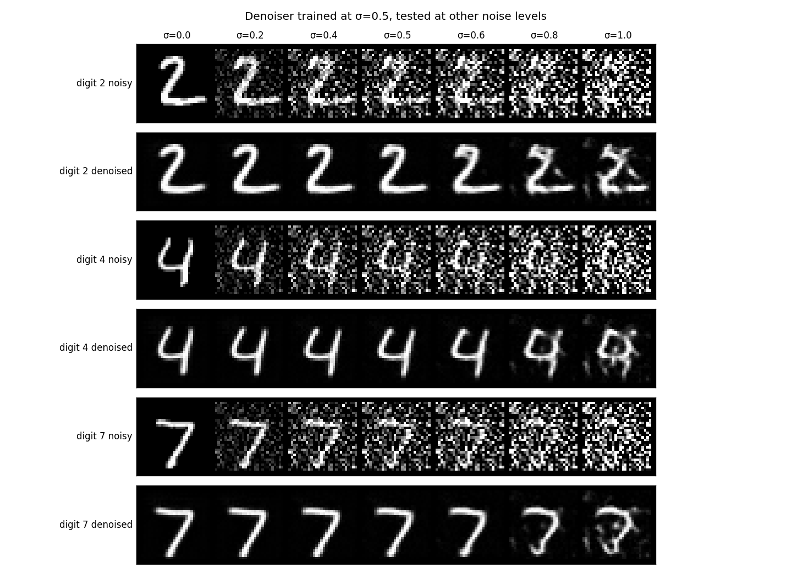
| noise level | MSE of noisy input | MSE after denoising |
|---|---|---|
| σ = 0.0 | 0.0000 | 0.0038 |
| σ = 0.2 | 0.0400 | 0.0045 |
| σ = 0.4 | 0.1600 | 0.0067 |
| σ = 0.5 (training level) | 0.2500 | 0.0087 |
| σ = 0.6 | 0.3600 | 0.0116 |
| σ = 0.8 | 0.6400 | 0.0235 |
| σ = 1.0 | 1.0000 | 0.0425 |
Mean squared error to the clean image over all 10,000 test digits.
PART B · 1.2.3
To make denoising generative, I repeat the experiment with a fresh D = 128 UNet whose input is pure noise z = ε, independent of the target digit (same optimizer, batch size and 5 epochs). At test time I feed 40 fresh noise images.
What the outputs look like. Whatever noise goes in, the network returns practically the same blurry image: a grey, digit-sized blob that looks like all ten digits printed on top of each other. After epoch 1 the 40 outputs are a little grainy; after epoch 5 they are smoother, but they do not become more digit-like. The loss says the same: it drops to about 0.067 within the first ~100 steps (mean 0.0729 in epoch 1) and then stays flat (0.0674 in epoch 5).
Why. The input ε is independent of the target digit x, so nothing in the input tells the network which digit to produce. With an MSE loss the best possible prediction for an unknown target is its expected value, i.e. the centroid of the training images — the pixel-wise mean digit. The numbers show that the network found exactly that: its outputs differ from the mean of the 60,000 training images by an MSE of only 1.4·10−4; across 1000 different noise inputs the pixel-wise standard deviation of the outputs is 0.006, against 0.193 across the training digits; and the mean of the outputs is visually identical to the mean of the data. The plateau at 0.067 is the average per-pixel variance of MNIST around its mean image (0.0673, computed from the training set) — the error that cannot be removed without seeing the digit. A one-step denoiser therefore cannot be a generator from pure noise: it maps every input to the same average image instead of to a sample from the data. Flow matching avoids this by predicting a velocity at many intermediate times, so information is added gradually and each trajectory can commit to one digit.
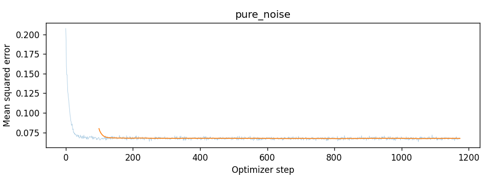
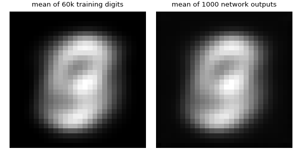
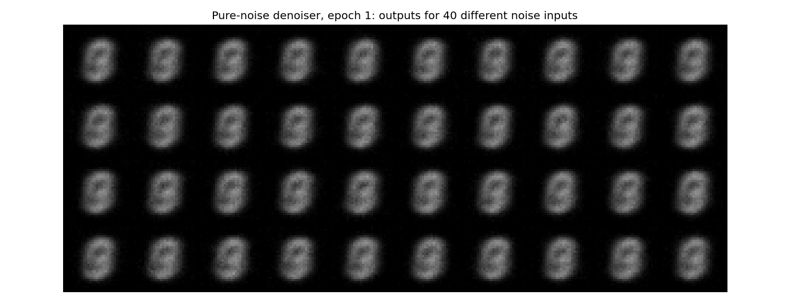
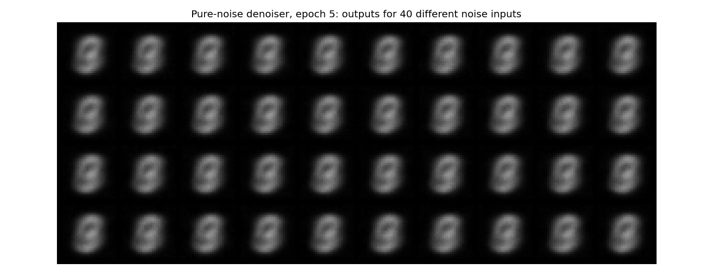
PART B · 2.1 – 2.2
Flow matching learns a vector field instead of a one-shot mapping. With x0 ∼ N(0, I) and a clean digit x1, the interpolation is xt = (1 − t)x0 + t·x1 and the target flow is u = x1 − x0. To tell the network where it is on the path, t ∈ [0, 1] is embedded by two FCBlocks (Linear–GELU–Linear) that modulate the Unflatten output (2D channels) and the first UpBlock output (D channels) by element-wise multiplication. Training (Algorithm 1) samples x1 from the data, t ∼ U[0, 1] and x0 ∼ N(0, I) and minimises ‖(x1 − x0) − uθ(xt, t)‖². I use D = 64 (1,996,417 parameters), batch size 64, Adam with initial learning rate 10−2 and exponential decay γ = 0.11/10 stepped once per epoch, for 10 epochs. The mean loss is 0.178 in epoch 1, 0.102 in epoch 5 and 0.093 in epoch 10; the loss spikes in the first steps (the initial learning rate is aggressive) and settles within a few hundred.
def time_fm_forward(unet: TimeConditionalUNet, x_1: torch.Tensor, num_ts: int) -> torch.Tensor:
"""Algorithm B.1: loss for one batch. t ~ U[0,1] is continuous, so num_ts is not used here."""
unet.train()
t = torch.rand(x_1.shape[0], device=x_1.device) # t ~ Uniform([0, 1])
x_0 = torch.randn_like(x_1) # x_0 ~ N(0, I)
t_ = t.view(-1, 1, 1, 1)
x_t = (1 - t_) * x_0 + t_ * x_1
return F.mse_loss(unet(x_t, t), x_1 - x_0)@torch.inference_mode()
def time_fm_sample(unet: TimeConditionalUNet, img_wh: tuple, num_ts: int, seed: int = 0, num_samples: int = 40) -> torch.Tensor:
"""Algorithm B.2: Euler integration from noise at t=0 to data at t=1 in num_ts steps of size 1/num_ts."""
unet.eval()
dev = next(unet.parameters()).device
H, W = img_wh
g = torch.Generator(device=dev).manual_seed(seed)
x = torch.randn(num_samples, 1, H, W, generator=g, device=dev)
for i in range(num_ts):
t = torch.full((num_samples,), i / num_ts, device=dev)
x = x + unet(x, t) / num_ts
return x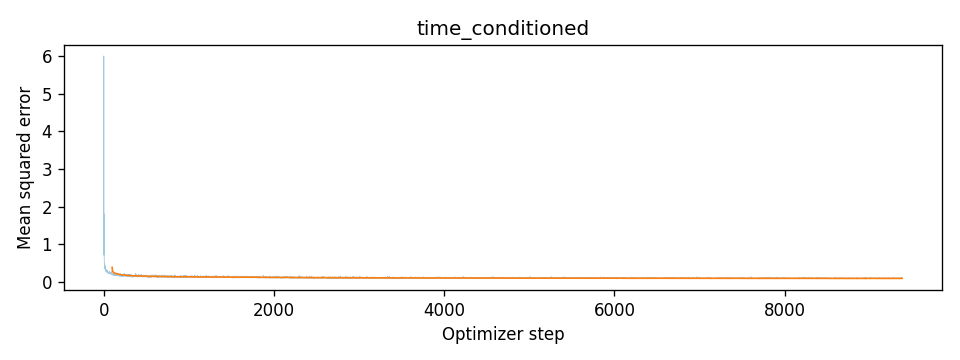
PART B · 2.3
Sampling (Algorithm 2) is Euler integration of the learned field from Gaussian noise at t = 0 to t = 1 in T = 50 steps, x ← x + uθ(x, t)/T. The same 40 initial noises are used after epochs 1, 5 and 10. After epoch 1 the samples are mostly broken strokes and blobs; after epoch 5 many are recognisable digits (several 9s, 7s, 4s, 0s and 3s) next to malformed ones; after epoch 10 strokes are cleaner and more samples are legible, but a visible fraction is still ambiguous. A sample largely keeps its identity from epoch 5 to epoch 10 (for example the 7 and the 3 in the top row) and only becomes sharper, which suggests that later epochs mostly refine the field instead of rerouting it. Without a label to commit to, the field must carry every noise sample toward the whole data distribution, and with only 50 Euler steps paths that pass between digit modes end up as malformed hybrids. The class-conditioned model removes that ambiguity.
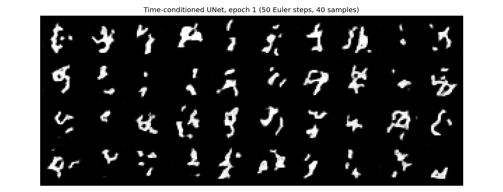
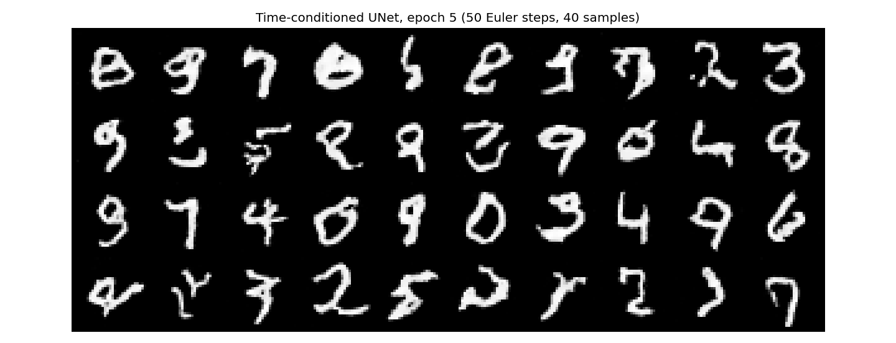
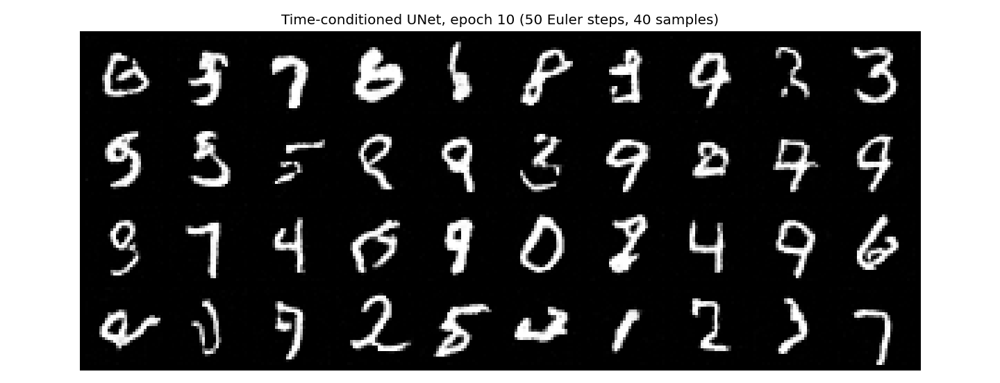
PART B · 2.4 – 2.6
The class c is one-hot encoded and embedded by two more FCBlocks, so the conditioning becomes unflatten ← c1·unflatten + t1 and up1 ← c2·up1 + t2 (2,019,201 parameters at D = 64). During training c is replaced by the zero vector with probability puncond = 0.1 (Algorithm 3), so a single network learns both the conditional and the unconditional flow. Sampling (Algorithm 4) uses classifier-free guidance, u = uuncond + γ(ucond − uuncond) with γ = 5, and T = 300 Euler steps. Training uses the same settings as before: D = 64, batch size 64, Adam with learning rate 10−2 decayed by 0.11/10 per epoch, 10 epochs. The mean loss is 0.165 in epoch 1, 0.092 in epoch 5 and 0.084 in epoch 10, lower than the 0.093 of the time-only model.
class ClassConditionalUNet(UnconditionalUNet):
def __init__(self, in_channels: int, num_classes: int, num_hiddens: int):
super().__init__(in_channels, num_hiddens)
D = num_hiddens
self.num_classes = num_classes
self.fc1_t, self.fc1_c = FCBlock(1, 2 * D), FCBlock(num_classes, 2 * D)
self.fc2_t, self.fc2_c = FCBlock(1, D), FCBlock(num_classes, D)
def forward(self, x: torch.Tensor, c: torch.Tensor, t: torch.Tensor, mask: Optional[torch.Tensor] = None) -> torch.Tensor:
"""x: (N,C,H,W); c: (N,) int64 labels; t: (N,) in [0,1]; mask: (N,), condition is dropped where mask == 0."""
assert x.shape[-2:] == (28, 28), "Expect input shape to be (28, 28)."
c = F.one_hot(c, self.num_classes).to(x.dtype)
if mask is not None:
c = c * mask.view(-1, 1).to(x.dtype)
t = t.view(-1, 1).to(x.dtype)
c1, t1 = self.fc1_c(c)[:, :, None, None], self.fc1_t(t)[:, :, None, None] # (N, 2D, 1, 1)
c2, t2 = self.fc2_c(c)[:, :, None, None], self.fc2_t(t)[:, :, None, None] # (N, D, 1, 1)
return self._run(x, lambda z: c1 * z + t1, lambda y: c2 * y + t2)def class_fm_forward(unet: ClassConditionalUNet, x_1: torch.Tensor, c: torch.Tensor, p_uncond: float, num_ts: int) -> torch.Tensor:
"""Algorithm B.3: loss for one batch (the class is dropped with probability p_uncond)."""
unet.train()
n = x_1.shape[0]
t = torch.rand(n, device=x_1.device)
x_0 = torch.randn_like(x_1)
t_ = t.view(-1, 1, 1, 1)
x_t = (1 - t_) * x_0 + t_ * x_1
keep = (torch.rand(n, device=x_1.device) >= p_uncond).float() # 1 = keep the class, 0 = zero vector
return F.mse_loss(unet(x_t, c, t, keep), x_1 - x_0)@torch.inference_mode()
def class_fm_sample(unet: ClassConditionalUNet, c: torch.Tensor, img_wh: tuple, num_ts: int,
guidance_scale: float = 5.0, seed: int = 0):
"""Algorithm B.4. Returns the final samples (N,C,H,W) and ~10 intermediate frames (N,T_animation,C,H,W)."""
unet.eval()
dev = next(unet.parameters()).device
H, W = img_wh
n = c.shape[0]
c = c.to(dev)
g = torch.Generator(device=dev).manual_seed(seed)
x = torch.randn(n, 1, H, W, generator=g, device=dev)
no_class = torch.zeros(n, device=dev)
every = max(1, num_ts // 10)
frames = [x.cpu()]
for i in range(num_ts):
t = torch.full((n,), i / num_ts, device=dev)
u_uncond = unet(x, c, t, no_class)
u_cond = unet(x, c, t)
x = x + (u_uncond + guidance_scale * (u_cond - u_uncond)) / num_ts
if (i + 1) % every == 0:
frames.append(x.cpu())
return x, torch.stack(frames, dim=1)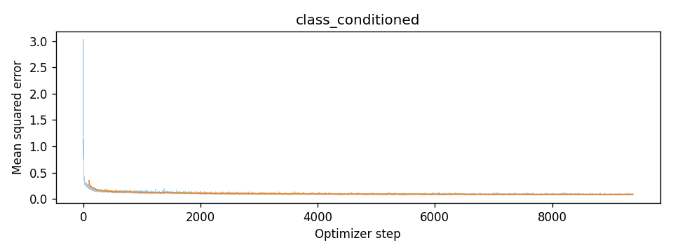
Four samples of every digit (one digit per column, same noises at every checkpoint): after epoch 1 every column already shows the requested digit, but several 2s, 4s, 5s and 9s are rough; after epoch 5 all 40 samples are clean, correctly labelled digits with visible variation in slant and stroke width; after epoch 10 the strokes are slightly crisper. The trajectory below shows how a sample forms: digit structure becomes visible around t ≈ 0.3–0.5, strokes are clear by t ≈ 0.7, and the last steps remove the remaining noise. The label tells the network which mode to head for, and γ = 5 strengthens that pull compared with the plain conditional prediction.
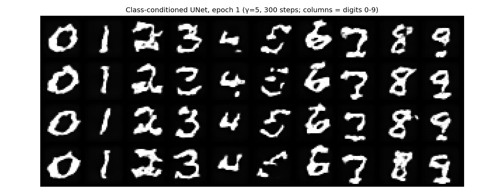
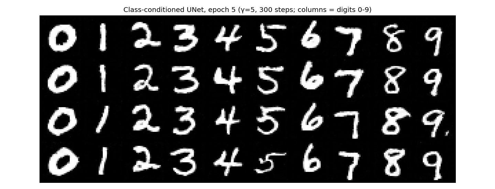
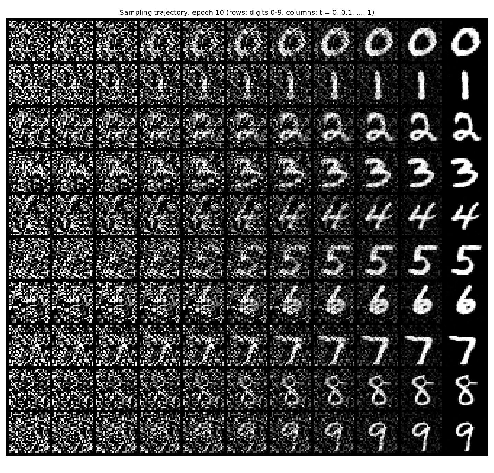
DELIVERABLE · NO SCHEDULER
The scheduler decays the learning rate from 10−2 to about 1.3·10−3 over the ten epochs: large steps early for speed, small steps late to settle. To drop it I replaced the schedule by a single constant learning rate and tested three values — 10−2 (the scheduler's starting value, i.e. simply deleting it), 3·10−3 and 10−3 (about where the scheduler ends) — with identical initialisation, data order, 10 epochs and sampling seed. As an additional objective check, a small CNN classifier (trained for 3 epochs, 98.84 % test accuracy) classified 1000 generated digits (100 per class, γ = 5, 300 steps).
| run | last-epoch training loss | class accuracy (1000 samples) |
|---|---|---|
| scheduler 1e-2 → 1e-3 (Part 2.5) | 0.0842 | 1.000 |
| constant 1e-2 | 0.0869 | 1.000 |
| constant 3e-3 | 0.0869 | 1.000 |
| constant 1e-3 | 0.0864 | 1.000 |
Result. A smaller constant learning rate is enough. The constant 10−3 run decreases fastest early on, finishes with the lowest loss of the three constant rates and ends within about 0.002 of the scheduled run, and its samples are as legible as the scheduled model's. The larger constant rates start more slowly and finish slightly higher.
Caveats. The differences are small. Classifier accuracy is saturated (100 % for every run), so it cannot rank the runs; the choice of 10−3 rests on the loss and on looking at the samples. The scheduled model is still marginally the cleanest (lowest final loss, fewest stray dots), while the constant-rate models show a few blotchy strokes and background specks (for example the “6” in the top row), the expected noise floor of a constant step size. A constant 10−3 therefore reproduces the scheduled model's quality closely without a scheduler; closing the remaining gap would call for weight averaging (EMA) or a short final decay, which I did not test.
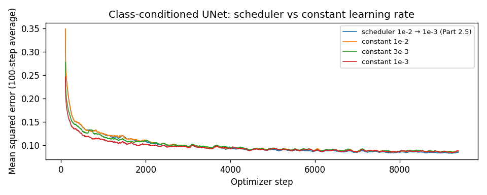
MOST IMPORTANT TAKEAWAY
A network that predicts the clean image in one step can only ever predict an average; flow models become generative by taking many small steps along a velocity field.
The same lesson appeared three times. In Part A the one-step estimate of a very noisy image is smooth because it is the average of everything consistent with the input, while Euler steps add the detail back. In Part B a denoiser fed pure noise collapses exactly onto the mean digit, because with an MSE loss the mean is the best answer when the input carries no information. Flow matching escapes that trap by asking for a velocity at every time along the path, and conditioning that velocity on the class label, with classifier-free guidance to sharpen the pull toward it, turned a model that produced half-formed strokes into one that draws all ten digits in ten epochs.